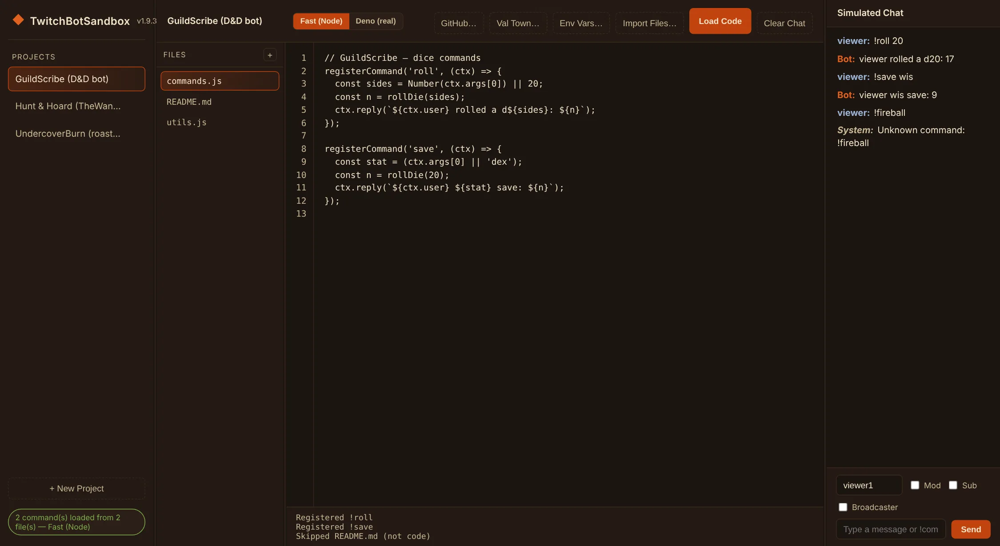

A Windows app for writing and testing Twitch chat bot commands without going live, or even connecting to Twitch.

Testing a chat bot usually means going live, typing commands into your own chat and hoping nothing embarrassing comes out. Every tweak means another deploy and another round of typing.
TwitchBotSandbox moves that to the desktop. Write the command, click Load Code, and type into a fake chat that answers back straight away. Flip on Mod, Sub or Broadcaster to see how the bot treats different viewers. When it works, push it to GitHub or Val Town from the same window.
Instant and safe, for quick ideas.
The real thing, for real bots.
deno runs your files as a real processawaitDeno.*, fetch and WebSocketDeno mode really does reach the network, so only run code you trust in it.
Type messages and !commands as any username, with Mod, Sub and Broadcaster toggles.
Drop in a webhook-style main.ts and it's fed properly signed Twitch EventSub messages. Its chat replies land back in the sandbox.
Val Town's std/sqlite is redirected to a local database, so bot data persists between runs without touching production.
As many projects and files as you like, with a file explorer, imports from disk and line numbers.
Download a project from a repo or val, or upload your changes back as a commit.
Per-project env vars and saved tokens are encrypted by Windows, never stored in plain text.
Commands use one simple call. Write this, click Load Code, then type !roll 20 in the chat.
registerCommand('roll', (ctx) => {
const sides = Number(ctx.args[0]) || 20;
const result = Math.floor(Math.random() * sides) + 1;
ctx.reply(`${ctx.user} rolled a d${sides}: ${result}`);
});
ctx carries the user, the arguments and the Mod/Sub/Broadcaster flags. postSystemLine() posts an unprompted bot line, for things like timers.
Yes. The live sandbox is the same app running in your browser. It has projects, files, Fast mode, the simulated chat and GitHub sync. Deno (real) mode needs the desktop app, since it runs a real deno process. Projects are saved in your browser, or sign in with Google to keep them in your own account with automatic backups.
Not yet. The desktop app is a personal tool for building my own bots for now. Keep an eye on this page.
No. Nothing you type is sent to Twitch. When a real Val Town bot runs in Deno mode, the sandbox catches Twitch's chat-send and app-token calls and keeps them local. Any other web requests the bot makes go out for real.
No. The installer bundles both, so it runs on a plain Windows PC.
The bots behind this tavern, like GuildScribe and Hunt & Hoard.
New features get built and tested live on stream. Come watch the bots get made.